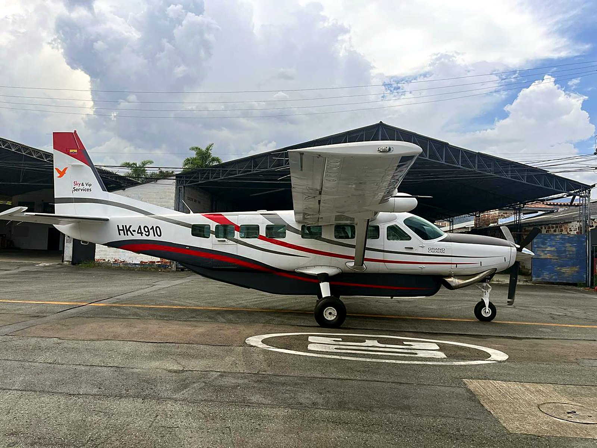

Información confiable para decisiones más seguras.
Servicios de seguridad y confiabilidad para personas y organizaciones que necesitan saber, con criterio profesional, en quién y en qué están confiando.
Los títulos se verifican antes, no después del escándalo.
Una hoja de vida puede verse impecable y no resistir una sola llamada. Antes de contratar, nombrar o asociarse con alguien, confirmamos con las fuentes que lo que dice es cierto. Que no le pase a usted ni a su organización.
- Títulos y diplomas
- Experiencia laboral
- Referencias
- Antecedentes
Más de 30 años protegiendo personas, instalaciones y recursos.
Jack Southerman cuenta con más de 30 años de experiencia en seguridad, liderazgo y gestión del riesgo, especializado en la protección de personas, instalaciones y recursos.
Su trayectoria incluye análisis de información, identificación y administración de riesgos, elaboración de informes y alertas de seguridad, así como gestión de relaciones interinstitucionales.
Su experiencia se encuentra respaldada por acreditación ante la Superintendencia de Vigilancia y Seguridad Privada, junto con una amplia experiencia en coordinación con organismos de seguridad, entidades judiciales y empresa privada.
Tres servicios, un mismo propósito.
Estudio de Confiabilidad
Evaluación integral de antecedentes, trayectoria, referencias y factores relevantes para apoyar procesos de selección y toma de decisiones seguras.

Estudios de Seguridad
Análisis profesional de personas, entornos y situaciones para identificar factores de riesgo, vulnerabilidades y oportunidades de prevención.

Entrevista de Seguridad
Entrevistas especializadas orientadas a obtener, contrastar y valorar información relevante para fortalecer la confiabilidad y la seguridad de personas y organizaciones.
Acompañamiento Ejecutivo y Empresarial Seguro
Movilidad premium para ejecutivos, empresarios y personas que necesitan desplazarse con seguridad, discreción y puntualidad. Cubrimos el traslado en vehículo dentro de la ciudad y sus alrededores, y vuelos chárter a ciudades del país y del exterior, siempre con un acompañante de alto nivel y profesional.

Traslado vehicular urbano y regional
- Vehículos de alta gama, en excelente estado, con mantenimiento preventivo y seguros vigentes.
- Rutas planeadas con alternas, monitoreo del trayecto y comunicación con la central de operación.
- Traslados a reuniones, aeropuertos, eventos y municipios cercanos.

Vuelos chárter nacionales e internacionales
- Vuelos privados a ciudades del país, incluidas zonas de difícil acceso por tierra, y a destinos en el exterior.
- Aeronaves según la necesidad, con itinerarios flexibles.
- Gestión de permisos, planes de vuelo y trámites migratorios y aduaneros.
Servicio puerta a puerta
Un solo acompañante, un solo contacto y un solo cobro, desde la oficina hasta el destino final, por tierra o por aire.
El acompañante
QUIÉN LO ACOMPAÑA
- Personal seleccionado, con verificación de antecedentes y evaluación continua.
- Formación en conducción defensiva y protocolos de seguridad.
- Presentación impecable, discreción y confidencialidad absolutas.
PARA QUIÉN ES
- Ejecutivos, directivos y empresarios.
- Inversionistas, delegaciones y clientes corporativos.
- Personas que requieren un nivel adicional de protección en sus desplazamientos.

Por qué elegirnos
En tierra y en aire.
Y flexibilidad de agenda.
El traslado se aprovecha para trabajar o descansar.
De la ciudad a destinos nacionales e internacionales.
Profesional en acompañante, vehículo y aeronave.
Modalidades
CONTRATACIÓN
- Urbano: por trayecto, hora, jornada o plan mensual corporativo.
- Vuelo chárter: por hora de vuelo o por ruta.
- Contratos corporativos con facturación consolidada.
CÓMO EMPEZAR
- Cuéntenos fecha, origen, destino y número de pasajeros.
- Le enviamos la propuesta con ruta, vehículo o aeronave y tarifa.
- Confirmada la agenda, su acompañante queda asignado.
“Muévase con seguridad, por tierra o por aire, y llegue a tiempo a donde su agenda lo requiera.”Solicitar acompañamiento